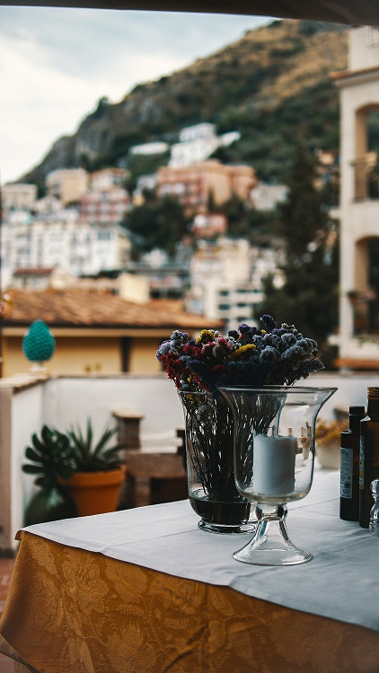

Portofino
Taverna del Marinaio
If you crave great quality seafood or pasta while exploring Portofino, and you don't want to spend a fortune, stop into Taverna del Marinaio. The Pinuccio brothers opened the restauarnt in 1989 after spending plenty of time in their grandmother's famous restaurant, "Navicello". Don't miss out on this Portofino favorite.
La Sponda
Enjoy a romantic dinner at the Michelin starred La Sponda. Every evening La Sponda is lit by four hundred candles. The live music, sea views, and delicious food make for an unforgettable evening.
